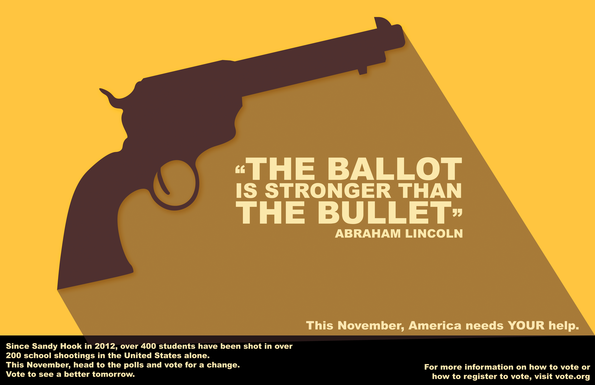

This poster was created in Adobe Illustrator for the course New Media Design Elements in the fall of 2018. The goal was to create a poster to encourage a younger demographic to go out and vote. Though it could be seen as controversial, I chose to take on the angle of gun violence.
